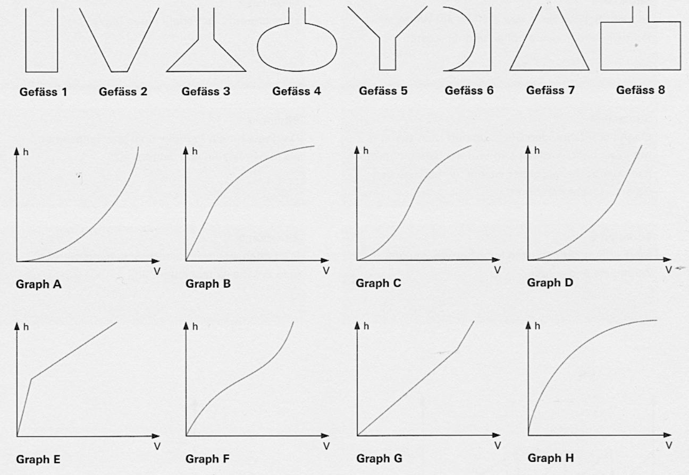

Wasser fliesst gleichmässig aus einer Röhre in ein Gefäss (z. B. konstant mit einem Liter Wasser pro Minute). Die Graphen zeigen, wie die Füllhöhe $h$ von der eingefüllten Menge $V$ abhängt. Es sind acht Gefässe (1 bis 8) und acht Graphen (A bis H). Sechs der acht Gefässe passen je zu einem der acht Graphen.

a) Welches Gefäss gehört zu welchem Graphen? Begründe jeweils.
Diese Aufgabe wird im Unterricht besprochen.
b) Zeichne zu den beiden übrig bleibenden Gefässen einen passenden Graphen.
Diese Aufgabe wird im Unterricht besprochen.
c) Zeichne zu den beiden übrig bleibenden Graphen ein passendes Gefäss.